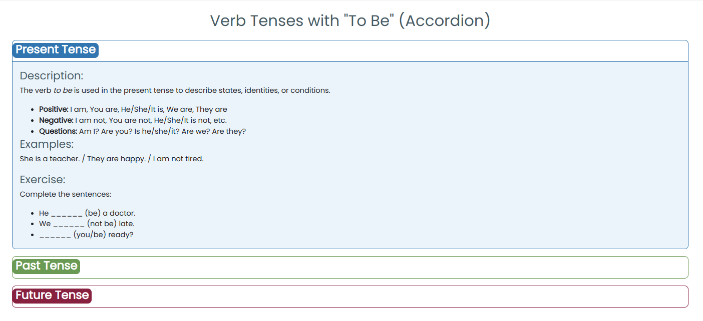
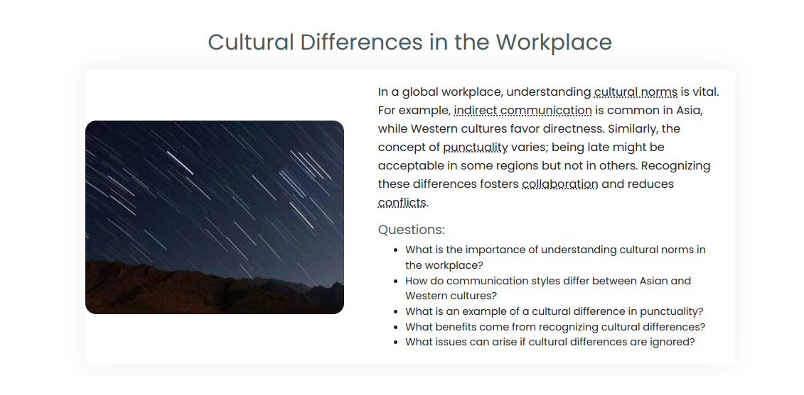
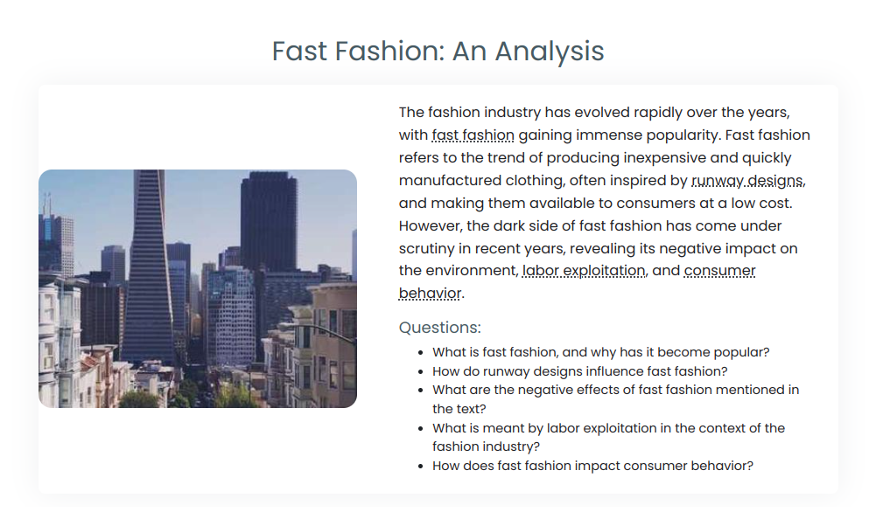
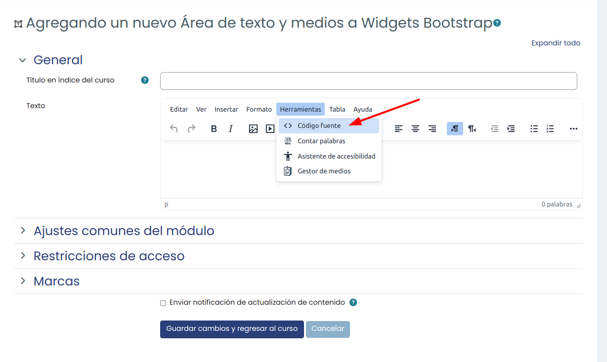
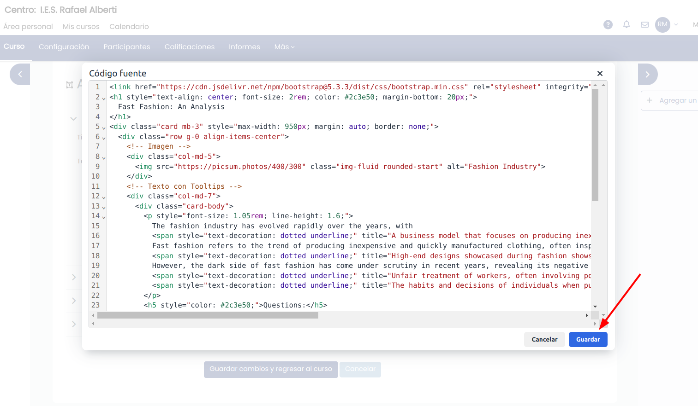
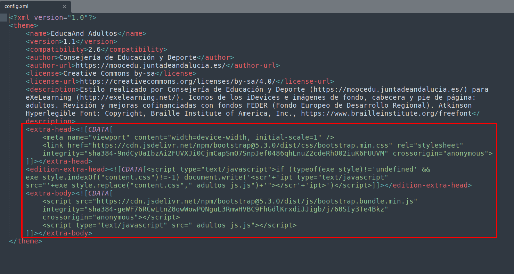
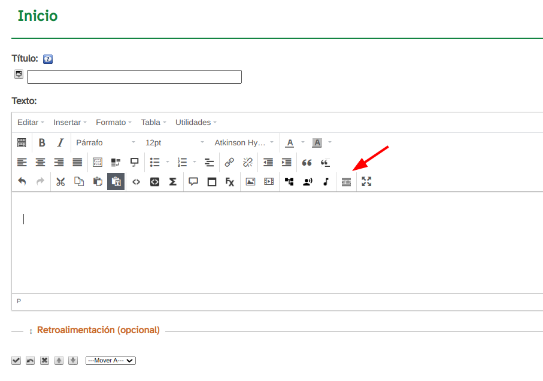
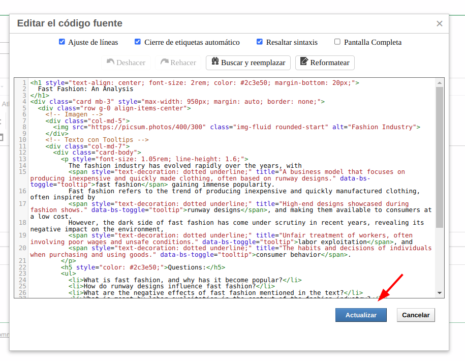
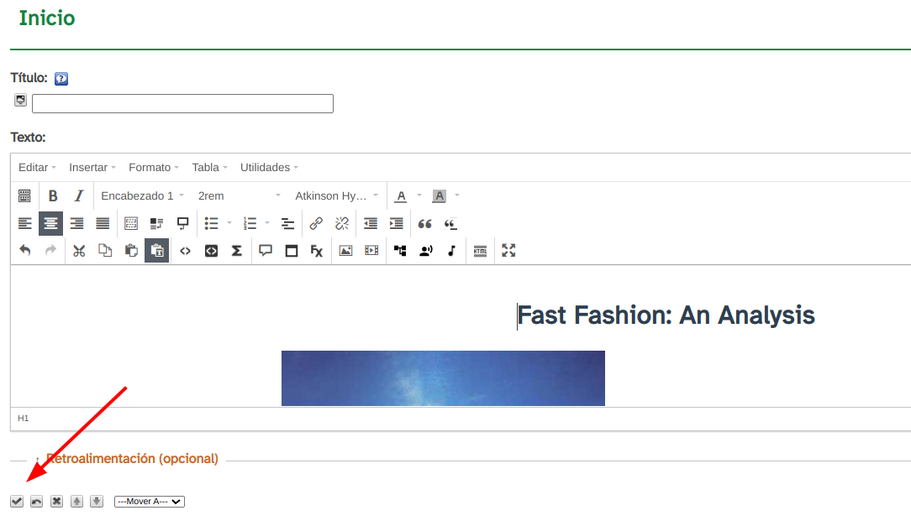
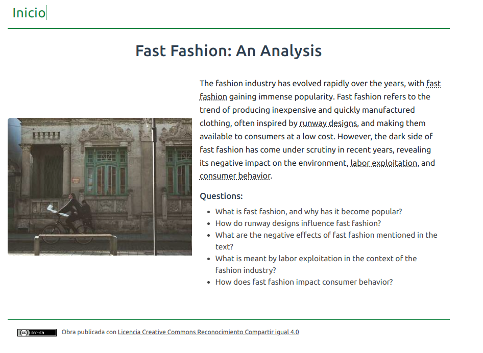

Sesion 2
EOI Componets Builder GPT: Generador de componentes Bootstrap para Moodle y eXeLearning
El EOI Componets Builder GPT es una herramienta diseñada para crear componentes interactivos y dinámicos basados en Bootstrap, como acordeones (Accordion), carruseles (Carousel), pestañas (Tabs), tooltips (Tooltip), tarjetas (Card), modales(Modals) y combinaciones de estos (Collapse & Modal, Cards & Modals, Tooltip & Card). Su objetivo es facilitar la creación e integración de estos elementos en plataformas educativas como Moodle y eXeLearning.
¿Qué necesitas para usarlo?
-
Una cuenta gratuita en ChatGPT para acceder al EOI Componets Builder GPT.
-
Acceso a Moodle o eXeLearning para integrar los componentes generados.
¿No tienes cuenta gratuita de ChatGPT?
Si no tienes una cuenta gratuita en ChatGPT, sigue estos pasos para crear una:
-
Accede al sitio web de ChatGPT:
Visita https://chat.openai.com. -
Regístrate:
Haz clic en el botón de "Sign up". Puedes registrarte utilizando tu correo electrónico o cuentas de Google/Microsoft. -
Confirma tu correo:
Revisa tu bandeja de entrada y verifica tu dirección de correo electrónico siguiendo el enlace enviado por ChatGPT. -
Configura tu cuenta:
Completa los pasos básicos de configuración y aceptación de términos.
¡Y listo! Ahora puedes generar componentes Bootstrap para Moodle y eXeLearning de manera sencilla y eficiente.
Acceso a EOI Componets Builder GPT
Puedes acceder al generador a través del siguiente enlace: EOI Componets Builder GPT
Cómo funciona
Para utilizar el EOI Componets Builder GPT, proporciona una descripción detallada y clara del componente que deseas generar, incluyendo la información textual, idioma y el contexto educativo. Aquí tienes ejemplos más elaborados para guiarte:
Ejemplo 1:
Quiero un accordion en inglés para Moodle con una explicación detallada sobre los tiempos verbales del verbo to be. Cada sección debe incluir: una descripción detallada del tiempo verbal, ejemplos de uso y un ejercicio básico que permita practicarlo.

Ejemplo 2:
Necesito un componente combinado de Card & Tooltip para Moodle. El diseño debe tener una imagen a la izquierda y texto explicativo a la derecha. Usa tooltips para definir las palabras más complejas del texto. A continuación, incluye cinco preguntas sobre el contenido del texto. El texto debe estar en inglés, ser de nivel B2, tener 500 caracteres, y abordar un tema relevante para el aprendizaje del idioma, como *cultural differences in the workplace.

Ejemplo 3:
Quiero un componente combinado de Card & Tooltip para Moodle. El diseño debe tener una imagen a la izquierda y texto explicativo a la derecha. Usa tooltips para definir las palabras más complejas del texto que te proporciono. A continuación, incluye cinco preguntas relacionadas con el contenido del texto. El texto es el siguiente:
"The fashion industry has evolved rapidly over the years, with fast fashion gaining immense popularity. Fast fashion refers to the trend of producing inexpensive and quickly manufactured clothing, often inspired by runway designs, and making them available to consumers at a low cost. However, the dark side of fast fashion has come under scrutiny in recent years, revealing its negative impact on the environment, labor exploitation, and consumer behavior."
Incorpora tooltips para las siguientes palabras: "fast fashion, runway designs, labor exploitation, consumer behavior"

El GPT generará el código adecuado según la descripción, que puedes copiar y pegar directamente en tu plataforma (Moodle o eXeLearning).
Algunas consideraciones a tener en cuenta:
-
Si necesitas realizar ajustes en los colores, estilos o tamaños, solo indícalo después de recibir el código, y el GPT te proporcionará una versión actualizada.
-
Las imágenes que utiliza provienen de un generador aleatorio y debe ser reemplazada por una específica si es necesario.
Integración en Moodle
1. Activa el modo edición:
-
Pulsa en "Añadir una actividad o un recurso"
-
Selecciona un "Área de texto y medios".
-
Cambia al modo de edición de código HTML.

2. Pega el código del componente generado y guarda los cambios.

3. "Guardar los cambios y regresar al curso" para visualizar el componente integrado.
Integración en eXeLearning
Para integrar un componente en eXeLearning, antes debemos modificar el archivo config.xmldel tema que estemos usando. Sigue estos pasos:
-
Abre el archivo
config.xmldel tema en uso. -
Añade las siguientes líneas antes de insertar cualquier componente:
// Bootstrap CSS
'<link href="https://cdn.jsdelivr.net/npm/bootstrap@5.3.3/dist/css/bootstrap.min.css" rel="stylesheet" integrity="sha384-J0nYgGqE8uTyFT9ANB62JfNixabxYrdsVDr2o3n3NENCMKDkHx8s0uVK6V25Q9l5" crossorigin="anonymous">',
// Bootstrap JS
'<script src="https://cdn.jsdelivr.net/npm/bootstrap@5.3.3/dist/js/bootstrap.bundle.min.js"></script>',
Ejemplo de un archivo config.xml modificado:

<extra-head><![CDATA[
<meta name="viewport" content="width=device-width, initial-scale=1" />
<link href="https://cdn.jsdelivr.net/npm/bootstrap@5.3.0/dist/css/bootstrap.min.css" rel="stylesheet" integrity="sha384-9ndCyUaIbzAi2FUVXJi0CjmCapSmO7SnpJef0486qhLnuZ2cdeRhO02iuK6FUUVM" crossorigin="anonymous">
]]></extra-head>
<edition-extra-head><![CDATA[<script type="text/javascript">if (typeof(exe_style)!='undefined' && exe_style.indexOf("content.css")!=-1) document.write('<scr'+'ipt type="text/javascript" src="'+exe_style.replace("content.css","_adultos_js.js")+'"></scr'+'ipt>')</script>]]></edition-extra-head>
<extra-body><![CDATA[
<script src="https://cdn.jsdelivr.net/npm/bootstrap@5.3.0/dist/js/bootstrap.bundle.min.js" integrity="sha384-geWF76RCwLtnZ8qwWowPQNguL3RmwHVBC9FhGdlKrxdiJJigb/j/68SIy3Te4Bkz" crossorigin="anonymous"></script>
<script type="text/javascript" src="_adultos_js.js"></script>
]]></extra-body>
En este enlace te puedes descargar un archivo config modificado para el tema Educaand_Adultos de la Consejería de Desarrollo Educativo y Formación Profesional de la Junta de Andalucía.
Nota. Realiza una copia de seguridad del archivo antes de modificarlo.
Una vez modificado el archivo config.xml ya tenemos el pryecto listo para añadir componentes boostrap. Sigue estos pasos:
1. Inserta el componente generado en el área de contenido:
-
Ve a "Añadir un iDevice de Texto".
-
Cambia al editor HTML.

- Pega el código del componente y actualiza.

2. Guardamos los cambios

3. Previsualizamos el proyecto

Nota. Una vez que hayas modificado el archivo config.xml del tema para añadir soporte a estos componentes, no será necesario volver a modificarlo cada vez que añadas un nuevo componente del mismo tipo. El archivo solo necesita configurarse una vez.